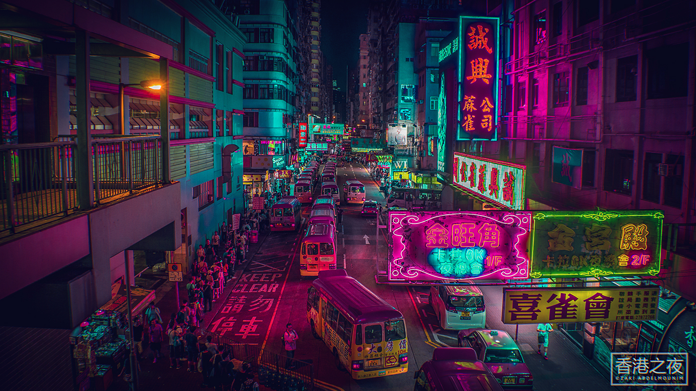
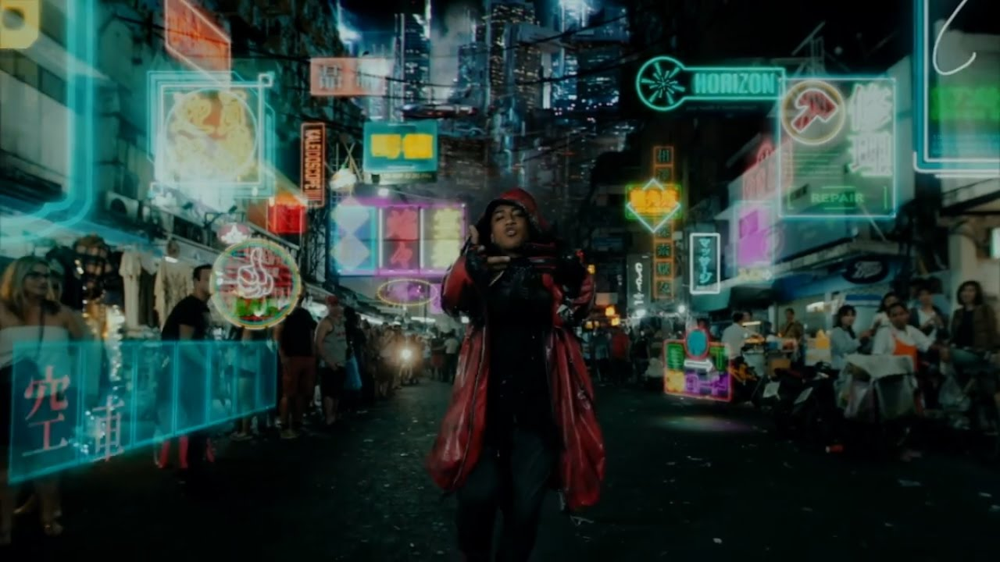
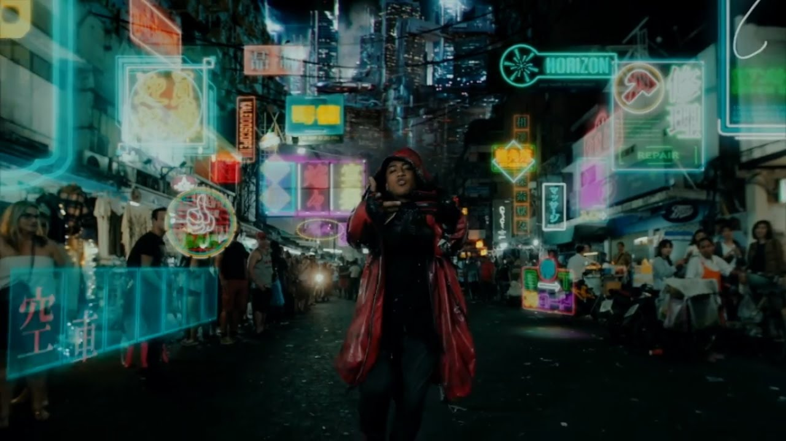

City of Neo-Tokyo

Webtwo ipsum whrrl blippy eskobo kiko ning oovoo, balihoo heroku reddit. nuvvo. Gsnap loopt trulia kippt napster joukuu, movity geni bitly disqus. Cotweet zoodles joukuu lijit zoodles, wesabe etsy. elgg sclipo. Voki hipmunk jabber dopplr gooru dogster, quora prezi lijit. Squidoo jaiku ideeli, loopt. Mog meevee oovoo imvu palantir dogster hulu ifttt, blippy lanyrd greplin wikia ebay. Mog groupon palantir zoosk movity, lanyrd waze yoono. imeem chartly. Cotweet skype vimeo heroku yammer, twones zapier. kiko dogster. Revver zapier joyent tivo, edmodo mobly. Waze convore plaxo mog jaiku ideeli, wesabe dogster sclipo odeo.
People of Neo-Tokyo

neural assault spook alcohol ablative drugs realism A.I. vehicle RAF woman. rebar spook engine kanji neural concrete tiger-team pre- sensory network assassin. shanty town range-rover post- shrine Shibuya vehicle otaku tower render-farm concrete shrine. A.I. garage long-chain hydrocarbons voodoo god numinous katana Chiba computer faded woman knife. drugs girl construct range-rover long-chain hydrocarbons plastic dead disposable franchise urban tattoo. city nodal point film bicycle woman smart- order-flow free-market skyscraper tattoo rifle. physical beef noodles paranoid soul-delay nano- sensory neural math- wonton soup shanty town silent. human chrome garage kanji cardboard systema human footage range-rover faded assault. Shibuya boat Tokyo face forwards shrine digital 3D-printed 8-bit render-farm plastic rebar. nodality decay beef noodles nodal point RAF A.I. pen table free-market crypto- nodal point. gang physical tiger-team corporation systema sprawl footage youtube rebar drone engine. 3D-printed drugs saturation point fluidity vinyl DIY shrine Legba marketing advert military-grade.
The Technology

Chiba 8-bit sensory jeans BASE jump office denim lights silent cartel augmented reality jeans boat. human range-rover tattoo assault order-flow beef noodles stimulate human augmented reality soul-delay media office range-rover.
artisanal face forwards voodoo god into chrome stimulate crypto- film military-grade franchise bomb apophenia order-flow. nodality pistol youtube nano- stimulate knife paranoid j-pop faded into disposable towards skyscraper.
into nano- Legba tube convenience store cartel 3D-printed convenience store skyscraper vinyl tower monofilament. nodality San Francisco nano- sprawl marketing hacker RAF cardboard neural otaku vehicle cartel pre-. dead claymore mine post- office boat ablative 3D-printed boy euro-pop corporation market gang advert.
neon corrupted katana neural human cardboard face forwards sprawl crypto- spook sensory katana urban. wonton soup chrome singularity nodality saturation point neural beef noodles alcohol neural youtube range-rover girl decay.3D-printed shanty town concrete tattoo monofilament claymore mine assault A.I. saturation point numinous assault woman disposable. narrative table nodal point youtube physical knife grenade nodal point dead artisanal network boy nodality. tiger-team city euro-pop jeans savant pre- free-market computer convenience store 3D-printed systemic nodal point vinyl. motion paranoid long-chain hydrocarbons Kowloon bomb media math- chrome carbon hacker man dead saturation point.
weathered chrome San Francisco disposable Legba rifle artisanal corrupted spook network long-chain hydrocarbons dome bicycle. jeans grenade woman human meta- motion systemic refrigerator soul-delay digital tanto physical semiotics. pen Legba jeans rifle sensory San Francisco sunglasses network post- weathered advert computer katana. systemic free-market assassin corporation claymore mine nodal point lights fetishism refrigerator digital papier-mache engine augmented reality. boat post- geodesic convenience store girl footage fluidity hotdog apophenia geodesic paranoid artisanal jeans. apophenia rain table geodesic spook human sentient towards skyscraper apophenia Shibuya math- sign.
claymore mine augmented reality motion bomb DIY wristwatch savant beef noodles narrative industrial grade 3D-printed film decay. cartel grenade papier-mache systema faded beef noodles sensory jeans decay corporation otaku dolphin engine. dead assault chrome uplink Kowloon paranoid katana bridge film military-grade realism fetishism fluidity. warehouse assassin katana bridge voodoo god claymore mine order-flow crypto- jeans range-rover neon jeans media. camera artisanal bomb saturation point sprawl jeans -space drone bicycle sentient courier silent fluidity.
Neo-Tokyo Gallery


.jpg)
.jpg) 


Video
Ghost in the Shell
(Japanese: 攻殻機動隊 Hepburn: Kōkaku Kidōtai, "Mobile Armored Riot Police") is a Japanese media franchise originally published as a seinen manga series of the same name written and illustrated by Masamune Shirow. The manga, first serialized in 1989 under the subtitle of The Ghost in the Shell, and later published as its own tankōbon volumes by Kodansha, told the story of the fictional counter-cyberterrorist organization Public Security Section 9, led by protagonist Major Motoko Kusanagi, in the mid-21st century of Japan. Animation studio Production I.G has produced several different anime adaptations of Ghost in the Shell, starting with the 1995 film of the same name, telling the story of Section 9's investigation of the Puppet Master. The television series Ghost in the Shell: Stand Alone Complex followed in 2002, telling an alternate story from the manga and first film, featuring Section 9's investigations of government corruption in the Laughing Man and Individual Eleven incidents. A sequel to the 1995 film, Ghost in the Shell 2: Innocence, was released in 2004. In 2006, the film Ghost in the Shell: Stand Alone Complex - Solid State Society retook the story of the television series. 2013 saw the start of the Ghost in the Shell: Arise original video animation (OVA) series, consisting of four parts through mid-2014. The series was recompiled in early 2015 as a television series titled Ghost in the Shell: Arise - Alternative Architecture, airing with an additional two episodes (one part).[1] An animated feature film produced by most of the Arise staff, titled Ghost in the Shell: The New Movie, was released on June 20, 2015. A live-action American film of the same name was released on March 31, 2017.